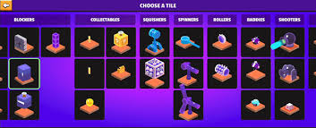

Crash course builder to bardzo fajna gra dla tych którzy lubią dynamiczne gry.Chodzi w niej oto że jesteś takim stforkiem i jedziesz autem.Musisz pokonywać przeszkody i dojechać do mety.
Można grać w tryb przygodowy, tworzyć własne poziomy i grać w poziomy innych. Poziomy są oceniane na poziomy trudności: Easy, Hard, Expert, Expert+ i Expert++. Jest jeszcze poziom trudności Club i on oznacza że trudność tego poziomu jest jeszcze nieoceniona.Możesz stworzyć maksymalnie 40 poziomów. Do poziomów możesz wybierać bardzo fajne muzyki. Im muzyka ma większe BPM tym szybciej jeździsz.

Strona główna
Postacie
Multimedia
Ciekawostki
Fabuła